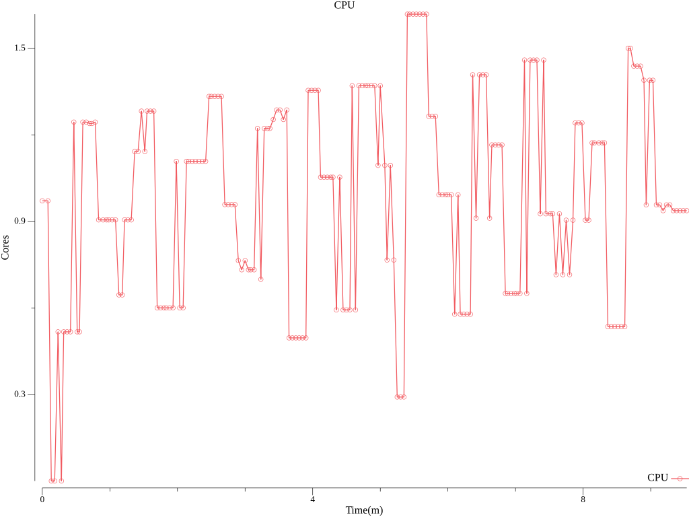
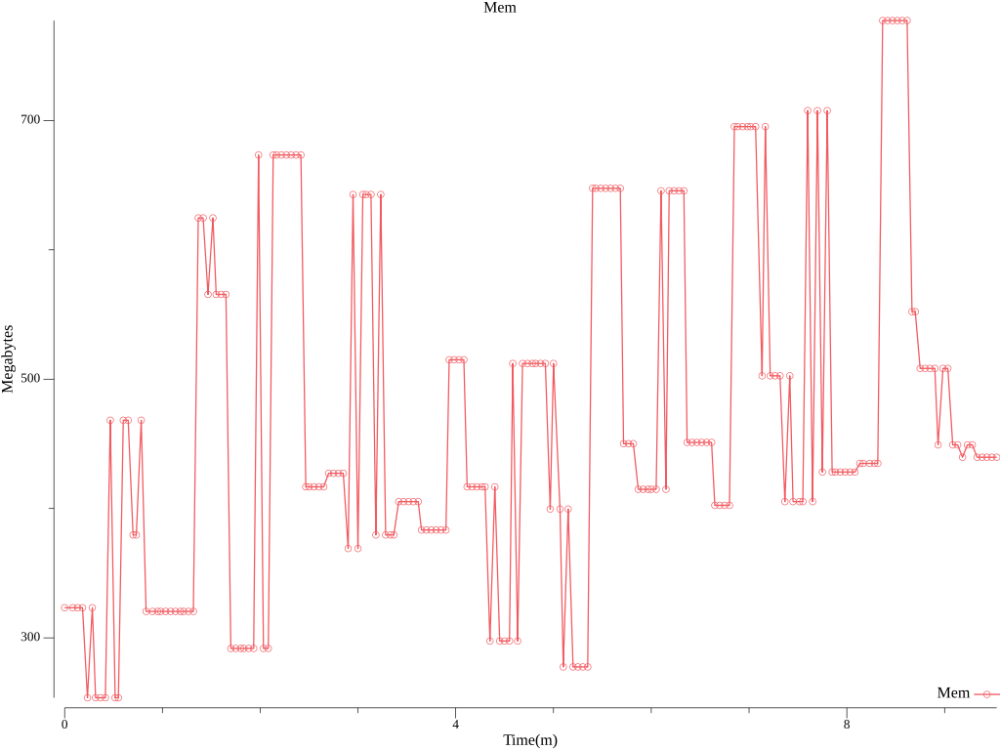
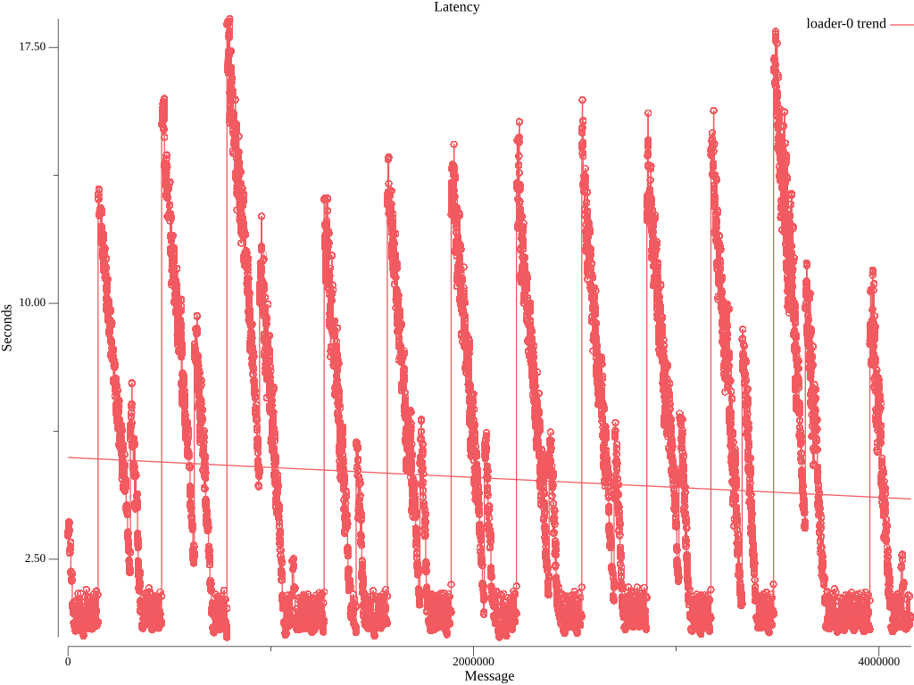
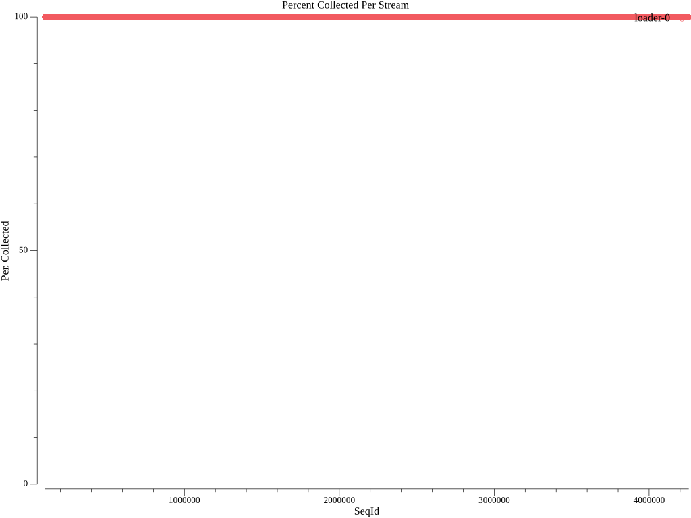

| Total | Size | Elapsed | Mean | Min | Max | Median |
|---|---|---|---|---|---|---|
| Msg | (s) | (s) | (s) | (s) | (s) | |
| 4157906 | 512 | 10m0s | 4.874 | 0.211 | 18.340 | 3.623 |




| Stream | Min Seq | Max Seq | Purged | Collected | Percent Collected |
|---|---|---|---|---|---|
| loader-0 | 98000 | 4255905 | 0 | 4157906 | 100.0% |
expire_metrics_secs = 60
data_dir = "/var/lib/vector/testhack-cknuf6do/functional"
[api]
enabled = true
# Load sensitive data from files
[secret.kubernetes_secret]
type = "file"
base_path = "/var/run/ocp-collector/secrets"
[sources.internal_metrics]
type = "internal_metrics"
# Logs from containers (including openshift containers)
[sources.input_benchmark_container]
type = "kubernetes_logs"
max_read_bytes = 3145728
glob_minimum_cooldown_ms = 15000
auto_partial_merge = true
include_paths_glob_patterns = ["/var/log/pods/testhack-cknuf6do_*/*/*.log"]
exclude_paths_glob_patterns = ["/var/log/pods/*/*/*.gz", "/var/log/pods/*/*/*.log.*", "/var/log/pods/*/*/*.tmp", "/var/log/pods/*/collector/*.log", "/var/log/pods/*/http/*.log", "/var/log/pods/default_*/*/*.log", "/var/log/pods/kube-*_*/*/*.log", "/var/log/pods/kube_*/*/*.log", "/var/log/pods/openshift-*_*/*/*.log", "/var/log/pods/openshift_*/*/*.log"]
pod_annotation_fields.pod_labels = "kubernetes.labels"
pod_annotation_fields.pod_namespace = "kubernetes.namespace_name"
pod_annotation_fields.pod_annotations = "kubernetes.annotations"
pod_annotation_fields.pod_uid = "kubernetes.pod_id"
pod_annotation_fields.pod_node_name = "hostname"
namespace_annotation_fields.namespace_uid = "kubernetes.namespace_id"
rotate_wait_secs = 5
[transforms.input_benchmark_container_meta]
type = "remap"
inputs = ["input_benchmark_container"]
source = '''
.log_source = "container"
# If namespace is infra, label log_type as infra
if match_any(string!(.kubernetes.namespace_name), [r'^default$', r'^openshift(-.+)?$', r'^kube(-.+)?$']) {
.log_type = "infrastructure"
} else {
.log_type = "application"
}
'''
[transforms.pipeline_forward_pipeline_viaq_0]
type = "remap"
inputs = ["input_benchmark_container_meta"]
source = '''
if .log_source == "container" {
.openshift.cluster_id = "${OPENSHIFT_CLUSTER_ID:-}"
if !exists(.level) {
.level = "default"
# Match on well known structured patterns
# Order: emergency, alert, critical, error, warn, notice, info, debug, trace
if match!(.message, r'^EM[0-9]+|level=emergency|Value:emergency|"level":"emergency"') {
.level = "emergency"
} else if match!(.message, r'^A[0-9]+|level=alert|Value:alert|"level":"alert"') {
.level = "alert"
} else if match!(.message, r'^C[0-9]+|level=critical|Value:critical|"level":"critical"') {
.level = "critical"
} else if match!(.message, r'^E[0-9]+|level=error|Value:error|"level":"error"') {
.level = "error"
} else if match!(.message, r'^W[0-9]+|level=warn|Value:warn|"level":"warn"') {
.level = "warn"
} else if match!(.message, r'^N[0-9]+|level=notice|Value:notice|"level":"notice"') {
.level = "notice"
} else if match!(.message, r'^I[0-9]+|level=info|Value:info|"level":"info"') {
.level = "info"
} else if match!(.message, r'^D[0-9]+|level=debug|Value:debug|"level":"debug"') {
.level = "debug"
} else if match!(.message, r'^T[0-9]+|level=trace|Value:trace|"level":"trace"') {
.level = "trace"
}
# Match on unstructured keywords in same order
if .level == "default" {
if match!(.message, r'Emergency|EMERGENCY|<emergency>') {
.level = "emergency"
} else if match!(.message, r'Alert|ALERT|<alert>') {
.level = "alert"
} else if match!(.message, r'Critical|CRITICAL|<critical>') {
.level = "critical"
} else if match!(.message, r'Error|ERROR|<error>') {
.level = "error"
} else if match!(.message, r'Warning|WARN|<warn>') {
.level = "warn"
} else if match!(.message, r'Notice|NOTICE|<notice>') {
.level = "notice"
} else if match!(.message, r'(?i)\b(?:info)\b|<info>') {
.level = "info"
} else if match!(.message, r'Debug|DEBUG|<debug>') {
.level = "debug"
} else if match!(.message, r'Trace|TRACE|<trace>') {
.level = "trace"
}
}
}
pod_name = string!(.kubernetes.pod_name)
if starts_with(pod_name, "eventrouter-") {
parsed, err = parse_json(.message)
if err != null {
log("Unable to process EventRouter log: " + err, level: "info")
} else {
., err = merge(.,parsed)
if err == null && exists(.event) && is_object(.event) {
if exists(.verb) {
.event.verb = .verb
del(.verb)
}
.kubernetes.event = del(.event)
.message = del(.kubernetes.event.message)
. = set!(., ["@timestamp"], .kubernetes.event.metadata.creationTimestamp)
del(.kubernetes.event.metadata.creationTimestamp)
. = compact(., nullish: true)
} else {
log("Unable to merge EventRouter log message into record: " + err, level: "info")
}
}
}
del(._partial)
del(.file)
del(.source_type)
.kubernetes.container_iostream = del(.stream)
del(.kubernetes.pod_ips)
del(.kubernetes.node_labels)
del(.timestamp_end)
if !exists(."@timestamp") {."@timestamp" = .timestamp}
.openshift.sequence = to_unix_timestamp(now(), unit: "nanoseconds")
}
'''
[transforms.pipeline_forward_pipeline_viaqdedot_1]
type = "remap"
inputs = ["pipeline_forward_pipeline_viaq_0"]
source = '''
if .log_source == "container" {
if exists(.kubernetes.namespace_labels) {
._internal.kubernetes.namespace_labels = .kubernetes.namespace_labels
for_each(object!(.kubernetes.namespace_labels)) -> |key,value| {
newkey = replace(key, r'[\./]', "_")
.kubernetes.namespace_labels = set!(.kubernetes.namespace_labels,[newkey],value)
if newkey != key {.kubernetes.namespace_labels = remove!(.kubernetes.namespace_labels,[key],true)}
}
}
if exists(.kubernetes.labels) {
._internal.kubernetes.labels = .kubernetes.labels
for_each(object!(.kubernetes.labels)) -> |key,value| {
newkey = replace(key, r'[\./]', "_")
.kubernetes.labels = set!(.kubernetes.labels,[newkey],value)
if newkey != key {.kubernetes.labels = remove!(.kubernetes.labels,[key],true)}
}
}
}
if exists(.openshift.labels) {for_each(object!(.openshift.labels)) -> |key,value| {
newkey = replace(key, r'[\./]', "_")
.openshift.labels = set!(.openshift.labels,[newkey],value)
if newkey != key {.openshift.labels = remove!(.openshift.labels,[key],true)}
}}
'''
[sinks.output_http]
type = "http"
inputs = ["pipeline_forward_pipeline_viaqdedot_1"]
uri = "http://localhost:8090"
method = "post"
[sinks.output_http.encoding]
codec = "json"
except_fields = ["_internal"]
[sinks.output_http.tls]
min_tls_version = "VersionTLS12"
ciphersuites = "TLS_AES_128_GCM_SHA256,TLS_AES_256_GCM_SHA384,TLS_CHACHA20_POLY1305_SHA256,ECDHE-ECDSA-AES128-GCM-SHA256,ECDHE-RSA-AES128-GCM-SHA256,ECDHE-ECDSA-AES256-GCM-SHA384,ECDHE-RSA-AES256-GCM-SHA384,ECDHE-ECDSA-CHACHA20-POLY1305,ECDHE-RSA-CHACHA20-POLY1305,DHE-RSA-AES128-GCM-SHA256,DHE-RSA-AES256-GCM-SHA384"
[transforms.add_nodename_to_metric]
type = "remap"
inputs = ["internal_metrics"]
source = '''
.tags.hostname = get_env_var!("VECTOR_SELF_NODE_NAME")
'''
[sinks.prometheus_output]
type = "prometheus_exporter"
inputs = ["add_nodename_to_metric"]
address = "[::]:24231"
default_namespace = "collector"
[sinks.prometheus_output.tls]
enabled = true
key_file = "/etc/collector/metrics/tls.key"
crt_file = "/etc/collector/metrics/tls.crt"
min_tls_version = "VersionTLS12"
ciphersuites = "TLS_AES_128_GCM_SHA256,TLS_AES_256_GCM_SHA384,TLS_CHACHA20_POLY1305_SHA256,ECDHE-ECDSA-AES128-GCM-SHA256,ECDHE-RSA-AES128-GCM-SHA256,ECDHE-ECDSA-AES256-GCM-SHA384,ECDHE-RSA-AES256-GCM-SHA384,ECDHE-ECDSA-CHACHA20-POLY1305,ECDHE-RSA-CHACHA20-POLY1305,DHE-RSA-AES128-GCM-SHA256,DHE-RSA-AES256-GCM-SHA384"